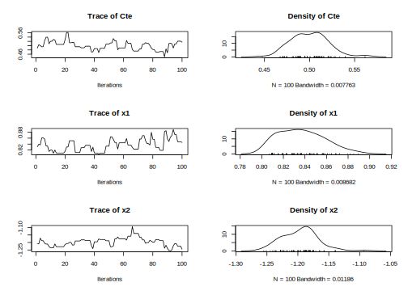
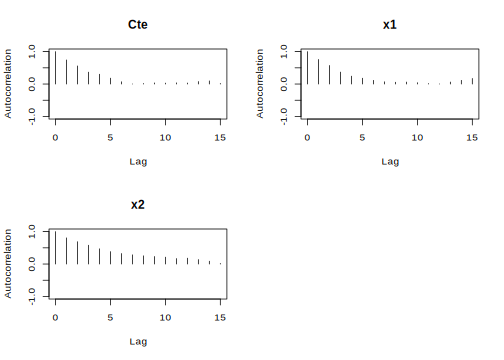

6.2 Logit model
In the logit model the dependent variable is binary, \(Y_i=\left\{1,0\right\}\), then it follows a Bernoulli distribution, \(Y_i\stackrel{ind} {\thicksim}B(\pi_i)\), that is, \(p(Y_i=1)=\pi_i\), such that \(\pi_i=\frac{\exp\left\{{\bf{x}}_i^{\top}\beta\right\}}{1+\exp\left\{{\bf{x}}_i^{\top}\beta\right\}}\).
The likelihood function of the logit model is
\[\begin{align} p(\mathbf{y}|\beta,\mathbf{X})&=\prod_{i=1}^N \pi_i^{y_i}(1-\pi_i)^{1-y_i}\\ &=\prod_{i=1}^N\left(\frac{\exp\left\{{\bf{x}}_i^{\top}\beta\right\}}{1+\exp\left\{{\bf{x}}_i^{\top}\beta\right\}}\right)^{y_i}\left(\frac{1}{1+\exp\left\{{\bf{x}}_i^{\top}\beta\right\}}\right)^{1-y_i}. \end{align}\]
I specify a Normal distribution as prior, \(\beta\sim N({\bf{\beta}}_0,{\bf{B}}_0)\). Then, the posterior distribution is
\[\begin{align} \pi(\beta|\mathbf{y},\mathbf{X})&\propto\prod_{i=1}^N\left(\frac{\exp\left\{{\bf{x}}_i^{\top}\beta\right\}}{1+\exp\left\{{\bf{x}}_i^{\top}\beta\right\}}\right)^{y_i}\left(\frac{1}{1+\exp\left\{{\bf{x}}_i^{\top}\beta\right\}}\right)^{1-y_i}\times\exp\left\{-\frac{1}{2}(\beta-\beta_0)^{\top}\mathbf{B}_0(\beta-\beta_0)\right\}. \end{align}\]
The logit model does not have a standard posterior distribution. Then, a random walk Metropolis–Hastings algorithm can be used to obtain draws from the posterior distribution. A potential proposal is a multivariate Normal centered at the current value, with covariance matrix \(\tau^2({\bf{B}}_0^{-1}+\widehat{{\bf{\Sigma}}}^{-1})^{-1}\), where \(\tau>0\) is a tuning parameter and \(\widehat{\bf{\Sigma}}\) is the sample covariance matrix from the maximum likelihood estimation (Martin, Quinn, and Park 2011).3
Observe that \(\log(p(\mathbf{y}|\beta,\mathbf{X}))=\sum_{i=1}^Ny_i{\bf{x}}_i^{\top}\beta-\log(1+\exp({\bf{x}}_i^{\top}\beta))\). I am going to use this expression when calculating the acceptance parameter in the computational implementation of the Metropolist-Hastings algorithm. In particular, the acceptance parameter is \(\alpha=\min\left\{1, \exp(\log(p(\mathbf{y}|\beta^{c},\mathbf{X}))+\log(\pi(\beta^c))-(\log(p(\mathbf{y}|\beta^{(s-1)},\mathbf{X}))+\log(\pi(\beta^{(s-1)}))))\right\}\), where \(\beta^c\) and \(\beta^{(s-1)}\) are draws from the proposal distribution and previous iteration of the Markov chain, respectively.4
Simulation
Let’s do a simulation exercise to check the performance of the algorithms. Set \(\beta=\begin{bmatrix}0.5 & 0.8 & -1.2\end{bmatrix}^{\top}\), \(\mathbf{x}_{ik}\sim N(0,1)\), \(k=2,3\) and \(i=1,2,\dots,10000\).
set.seed(010101) # Set a seed for replicability of results
N <- 10000 # Sample size
B <- c(0.5, 0.8, -1.2) # Population location parameters
x2 <- rnorm(N) # Regressor
x3 <- rnorm(N) # Regressor
X <- cbind(1, x2, x3) # Regressors
XB <- X%*%B
PY <- exp(XB)/(1 + exp(XB)) # Probability of Y = 1
Y <- rbinom(N, 1, PY) # Draw Y's
table(Y) # Frequency## Y
## 0 1
## 4115 5885write.csv(cbind(Y, x2, x3), file = "DataSimulations/LogitSim.csv") # Export data
###### 1. Programming the M-H sampler #######
# This function sets the M-H sampler using as default a hyperparameter mean equal to 0
# and a covariance equal to 1000 times a identity matrix, a tunning parameter equal to 1,
# 1000 post burn-in iterations, and the latter is equal to 500.
MHfunc <- function(y, X, b0 = rep(0, dim(X)[2] + 1), B0 = 1000*diag(dim(X)[2] + 1), tau = 1,
iter = 1000, burnin = 500){
Xm <- cbind(1, X) # Regressors
K <- dim(Xm)[2] # Number of location parameters
BETAS <- matrix(0, iter + burnin, K) # Space for posterior chains
Reg <- glm(y ~ Xm - 1, family = binomial(link = "logit")) # Maximum likelihood estimation
BETA <- Reg$coefficients # Maximum likelihood parameter estimates
tot <- iter + burnin # Total iterations M-H algorithm
COV <- vcov(Reg) # Maximum likelihood covariance matrix
COVt <- tau^2*solve(solve(B0) + solve(COV)) # Covariance matrix for the proposal distribution
Accep <- rep(0, tot) # Space for calculating the acceptance rate
# create progress bar in case that you want to see iterations progress
# pb <- winProgressBar(title = "progress bar", min = 0,
# max = tot, width = 300)
for(it in 1:tot){
BETAc <- BETA + MASS::mvrnorm(n = 1, mu = rep(0, K), Sigma = COVt) # Candidate location parameter
likecand <- sum((Xm%*%BETAc) * Y - apply(Xm%*%BETAc, 1, function(x) log(1 + exp(x)))) # Log likelihood for the candidate
likepast <- sum((Xm%*%BETA) * Y - apply((Xm%*%BETA), 1, function(x) log(1 + exp(x)))) # Log lkelihood for the actual draw
priorcand <- (-1/2)*crossprod((BETAc - b0), solve(B0))%*%(BETAc - b0) # Log prior for candidate
priorpast <- (-1/2)*crossprod((BETA - b0), solve(B0))%*%(BETA - b0) # Log prior for actual draw
alpha <- min(1, exp(likecand + priorcand - likepast - priorpast)) #Probability of selecting candidate
u <- runif(1) # Decision rule for selecting candidate
if(u < alpha){
BETA <- BETAc # Changing reference for candidate if selected
Accep[it] <- 1 # Indicator if the candidate is accepted
}
BETAS[it, ] <- BETA # Saving draws
# setWinProgressBar(pb, it, title=paste( round(it/tot*100, 0),
# "% done"))
}
# close(pb)
return(list(Bs = BETAS[-c(1:burnin), ], AceptRate = mean(Accep)))
}
Posterior <- MHfunc(y = Y, X = cbind(x2, x3), iter = 100, burnin = 5) # Runing our M-H function changing some default parameters.
paste("Acceptance rate equal to", round(Posterior$AceptRate, 2), sep = " ")## [1] "Acceptance rate equal to 0.49"PostPar <- coda::mcmc(Posterior$Bs)
# Names
colnames(PostPar) <- c("Cte", "x1", "x2")
# Summary posterior draws
summary(PostPar)##
## Iterations = 1:100
## Thinning interval = 1
## Number of chains = 1
## Sample size per chain = 100
##
## 1. Empirical mean and standard deviation for each variable,
## plus standard error of the mean:
##
## Mean SD Naive SE Time-series SE
## Cte 0.5000 0.02025 0.002025 0.005291
## x1 0.8366 0.02057 0.002057 0.005556
## x2 -1.1969 0.02811 0.002811 0.008643
##
## 2. Quantiles for each variable:
##
## 2.5% 25% 50% 75% 97.5%
## Cte 0.4688 0.4872 0.4989 0.5119 0.5397
## x1 0.8092 0.8195 0.8357 0.8512 0.8809
## x2 -1.2475 -1.2190 -1.1906 -1.1807 -1.1396

##
## Fraction in 1st window = 0.1
## Fraction in 2nd window = 0.5
##
## Cte x1 x2
## 1.4567 -1.4614 -0.8573##
## Quantile (q) = 0.5
## Accuracy (r) = +/- 0.025
## Probability (s) = 0.95
##
## You need a sample size of at least 1537 with these values of q, r and s##
## Stationarity start p-value
## test iteration
## Cte passed 1 0.0799
## x1 failed NA 0.0350
## x2 passed 1 0.6687
##
## Halfwidth Mean Halfwidth
## test
## Cte passed 0.5 0.0104
## x1 <NA> NA NA
## x2 passed -1.2 0.0169###### 2. Using a library: MCMCpack #######
RegLog <- MCMCpack::MCMClogit(Y~X-1, burnin = 1000, mcmc = 10000, b0 = rep(0, 3), B0 = 1000^(-1)*diag(3), tune = 1, thin = 1)
summary(RegLog)##
## Iterations = 1001:11000
## Thinning interval = 1
## Number of chains = 1
## Sample size per chain = 10000
##
## 1. Empirical mean and standard deviation for each variable,
## plus standard error of the mean:
##
## Mean SD Naive SE Time-series SE
## X 0.4888 0.02499 0.0002499 0.0008527
## Xx2 0.8325 0.02711 0.0002711 0.0009338
## Xx3 -1.2112 0.03027 0.0003027 0.0010453
##
## 2. Quantiles for each variable:
##
## 2.5% 25% 50% 75% 97.5%
## X 0.4395 0.4726 0.4891 0.5051 0.5385
## Xx2 0.7787 0.8145 0.8326 0.8499 0.8877
## Xx3 -1.2734 -1.2312 -1.2105 -1.1906 -1.1515When using our GUI to estimate this model, we should follow these steps:
- Select univariate models on the top panel
- Select logit models using the left radio button
- Upload the data set (we save this in folder DataSimulations in file LogitSim.csv)
- Select MCMC iterations, burn-in and thinning parameters
- Select dependent and independent variables (see Figure 6.5)
- Click the Build formula button
- Set the hyperparameters and the tunning parameter
- Click the Go! button
- Analyze results (see Figure 6.6)
- Download posterior chains and diagnostic plots
Figure 6.5: Univariate models: Logit/normal model
We observe from our results that all 95% credible intervals embrace the population parameters. We also observe that there is a high level of autocorrelation (see autocorrelation plots) that potentially increases the dependence factor in the Raftery test (dependence factors higher than 5 are worrisome). Dependence factors are the proportional increase in the number of iterations attributable to serial dependence. Although, other diagnostics seem to be right (see Chapter 10 for details). We can potentially mitigate convergence issues running longer chains or multiple chains, using a thinning parameter greater than 1, picking a better tunning parameter or improving the mixing properties of the model using better priors or performing better math.

Figure 6.6: Logit/normal model: Results.
References
Martin, Andrew D., Kevin M. Quinn, and Jong Hee Park. 2011. “MCMCpack: Markov Chain Monte Carlo in R.” Journal of Statistical Software 42 (9): 1–21.